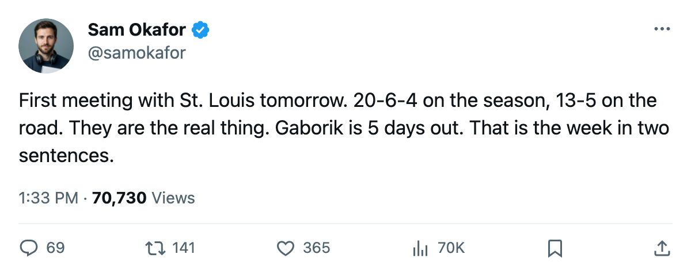

TOR
TORWeek Ahead: St. Louis comes to town with the best road record, Gaborik returns Friday, and a western swing closes the year
The next five games take Toronto from first meetings against the Blues and thrashers to a three-game road trip through the Northwest.
 Sam OkaforLeafs beat reporter · Queen City Telegram
Sam OkaforLeafs beat reporter · Queen City Telegram
 Barret Jackman86 faces the club that traded him for the first time since 2005-03-04 when
Barret Jackman86 faces the club that traded him for the first time since 2005-03-04 when  St. Louis Blues visits on 2005-12-21. The Blues arrive with 46 points, the best record in the St. Louis Blues-led Central Division, and a 13-5 road mark. This is the first meeting of the season between the two clubs. Toronto is 14-6 at home.
St. Louis Blues visits on 2005-12-21. The Blues arrive with 46 points, the best record in the St. Louis Blues-led Central Division, and a 13-5 road mark. This is the first meeting of the season between the two clubs. Toronto is 14-6 at home.
Jackman left St. Louis in early March and has 22 points in 33 games this season, all at the blue line on the top pairing alongside  Rostislav Klesla87. He has not played against his former club since arriving. St. Louis is 20-6-4 and 13-5 on the road, which says they travel well against anyone. The one-game slide doesn't change that.
Rostislav Klesla87. He has not played against his former club since arriving. St. Louis is 20-6-4 and 13-5 on the road, which says they travel well against anyone. The one-game slide doesn't change that.
 Marian Gaborik99 returns to the lineup on 2005-12-25, five days from now. The leg injury that put him on the shelf started between 2005-11-16 and 2005-11-17. He has 8 points in 17 games at a 99 overall grade. His return fills the top right-wing slot and gives
Marian Gaborik99 returns to the lineup on 2005-12-25, five days from now. The leg injury that put him on the shelf started between 2005-11-16 and 2005-11-17. He has 8 points in 17 games at a 99 overall grade. His return fills the top right-wing slot and gives  Mats Sundin92 a winger who can finish.
Mats Sundin92 a winger who can finish.
The schedule
| Date | Opponent | Home/Away | Opponent points | Opponent streak | Opponent road/home |
|---|---|---|---|---|---|
| 2005-12-21 | STL | Home | 46 | L1 | 13-5 away |
| 2005-12-23 | ATL | Home | 26 | L2 | 5-11 away |
| 2005-12-27 | CGY | Away | 38 | L1 | 13-4 home |
| 2005-12-28 | EDM | Away | 32 | L2 | 8-9 home |
| 2005-12-31 | VAN | Away | 33 | L2 | 7-9 home |
The Tuesday game against  Atlanta Thrashers sets up easily. Atlanta sits at 26 points with a 5-11 road record and a 2-game slide. They lost their first meeting against Toronto this season 4-1 at the ACC on 2005-12-16.
Atlanta Thrashers sets up easily. Atlanta sits at 26 points with a 5-11 road record and a 2-game slide. They lost their first meeting against Toronto this season 4-1 at the ACC on 2005-12-16.
 Sami Salo79 meets his former club on 2005-12-27 when Toronto travels to
Sami Salo79 meets his former club on 2005-12-27 when Toronto travels to  Calgary Flames. Salo left Toronto on 2005-03-04 and now plays on Calgary's top pairing. The Flames carry 3 injuries: centre
Calgary Flames. Salo left Toronto on 2005-03-04 and now plays on Calgary's top pairing. The Flames carry 3 injuries: centre  Craig Conroy82 (knee, returns 2005-12-21), centre
Craig Conroy82 (knee, returns 2005-12-21), centre  Stephane Yelle73 (knee, returns 2005-12-21), and defenceman
Stephane Yelle73 (knee, returns 2005-12-21), and defenceman  Toni Lydman74 (foot, returns 2006-01-26). Conroy and Yelle should both be available for this meeting.
Toni Lydman74 (foot, returns 2006-01-26). Conroy and Yelle should both be available for this meeting.
 Edmonton Oilers and
Edmonton Oilers and  Vancouver Canucks close the calendar. Edmonton is 10-14-4 with 2 injuries. Vancouver is 10-14-3 with 4 injuries, including defenceman
Vancouver Canucks close the calendar. Edmonton is 10-14-4 with 2 injuries. Vancouver is 10-14-3 with 4 injuries, including defenceman  Ed Jovanovski84 (ankle, returns 2006-01-09) and centre
Ed Jovanovski84 (ankle, returns 2006-01-09) and centre  Petr Cajanek74 (leg, returns 2006-01-17). Both are on 2-game losing streaks.
Petr Cajanek74 (leg, returns 2006-01-17). Both are on 2-game losing streaks.
Goaltending
 Roberto Luongo95 has 15 starts in 33 games. Maxime Ouellet86 has 8. Luongo's morale sits at 82 with 1 contract year remaining. He has been the starter since the November window and there is no indication the committee is moving off him before the break.
Roberto Luongo95 has 15 starts in 33 games. Maxime Ouellet86 has 8. Luongo's morale sits at 82 with 1 contract year remaining. He has been the starter since the November window and there is no indication the committee is moving off him before the break.
